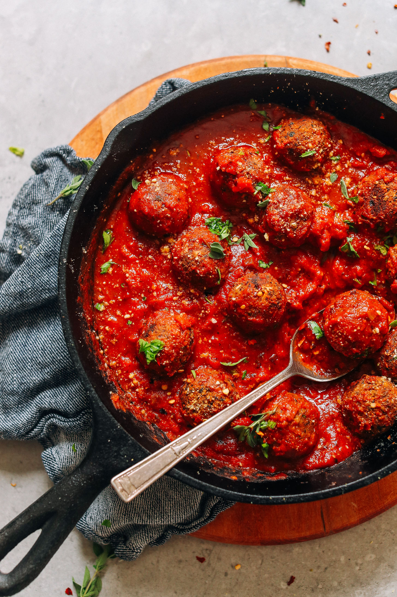

Gluten-free Meatball
Vegan meatballs made with real food that are full of flavor, don’t fall apart, aren’t mushy, and are easy to make
Plant-based take on meatballs most closely resembles the flavors of Italian-American meatballs which are made with breadcrumbs and herbs
Perfect texture–crisp and charred on the outside and firm-yet-tender in the middle.
Section 1: Ingredients
Meatballs
- 1 cup cooked and cooled quinoa
- 1 can black beans* (rinsed, drained, dried)
- 2 Tbsp water (or sub olive or avocado oil)
- 3 cloves garlic (minced)
- 1/2 cup diced shallot
- 1/4 tsp sea salt (plus more to taste)
- 2 1/2 tsp fresh oregano (or sub half the amount in dried)
- 1/2 tsp red pepper flake (reduce for less heat)
- 1/2 tsp fennel seeds (optional)
- 1/2 cup vegan parmesan cheese
- 2 Tbsp tomato paste
- 3 Tbsp chopped fresh basil or parsley
For Serving
- Marinara sauce
Section 2: Instructions
- Preheat oven to 350 degrees F (176 C). Add rinsed, dried black beans to a parchment-lined baking sheet. Bake for 15 minutes or until beans appear cracked and feel dry to the touch (see beans in food processor photo). Remove beans from the oven and then increase oven heat to 375 degrees F (190C).
- Heat a large (oven-safe) skillet over medium heat. Once hot, add water (or oil), garlic, and shallot. Sauté for 2-3 minutes, or until slightly softened, stirring frequently. Remove from heat (and reserve pan for later use).
- Add black beans to a food processor along with garlic, shallot, sea salt, oregano, red pepper flake, and fennel (optional) and pulse into a loose meal (DON’T overmix). Then add cooked/cooled quinoa, vegan parmesan cheese, tomato paste, fresh basil or parsley, and Worcestershire (optional).
- Taste and adjust flavor as needed, adding more salt for saltiness/depth of flavor, red pepper flake for heat, herbs for earthiness, or Worcestershire (optional) for more depth of flavor. If it’s too tacky or wet, add more vegan parmesan cheese and pulse to combine (we added a bit more).
- Scoop out heaping 1 1/2 Tbsp amounts (using this scoop or a Tablespoon) and gently form into small balls using your hands. Add to a plate and refrigerate for 15 minutes.
- Heat an oven-safe metal or cast-iron skillet over medium heat. Once hot, add a small amount of oil to prevent sticking, then add the meatballs. Sauté for a few minutes, gently turning the meatballs to get a slight crust on either side. Then transfer to the oven and bake for 20-30 minutes or until golden brown on the edges and slightly dry to the touch.
- These meatballs are delicious as is, or you can add some marinara to the pan and heat over medium heat for 5 minutes (or until bubbling / hot) to infuse more flavor.
- Serve with marinara and additional vegan parmesan cheese. Leftover meatballs keep for 4-5 days in the refrigerator or 1 month in the freezer. Reheat in the microwave or in a 375-degree F (190 C) oven until warmed through.
NOTES:
- If you don't have a large food processor, you may have to work in two batches. You'll need to combine the mixture in a mixing bowl first before doing this.
- If you don't have a food processor, you can still make these vegan meatballs. Just mince the mushrooms, finely dice the onions, mash the chickpeas with a potato masher and you can pulse the oats in a blender (or use quick oats). Combine all ingredients well.